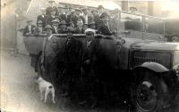
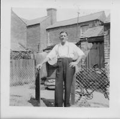
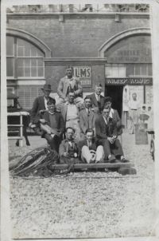

Albert Edward Vickers
1890–1953
Photo Gallery


garden rear of 13 Clewer Fields

includes Albert Vickers and
Arthur Dobson
The are a number of documents that refer to Alberts Army service, these can been seen here.
Overview
Albert was the youngest of the 10 children had by Henry and Eliza, after both parents had died, Albert was living with his older Brother James.
Marriage and Children
Married Rachel Brown 1st april 1919 in Windsor Berkshire.
Known children: Albert Willian James Vickers 1920 and Alice Rachel Vickers 1925
Timeline
Notes
Albert Edward Vickers was born on 20th March 1890, youngest son of Henry and Eliza Vickers. From the 1901 Census, Albert was 11 years old and probably still a scholar, at this time he was living with his parents, at 61 Victoria Cottages (formally Edwards Square), along with brothers James and Arthur and sister Ellen. By 1911, Albert was a Butcher, living at 16 Victoria Cottages. During the early part of the century, Albert was playing football for Windsor and Eton, appearing in the local press a number of times. By 1915 Albert had enlisted and was a Sergeant with the Royal Rifles, Service number S2703, and was part of the Machine Gun Corps.
After his return to the UK, albert Married Rachel Brown on 1st April 1919, they lived in Clewer Fields, previously known as Church Path, where in 1920 Albert William was born, and later in 1925 Alice Rachel was born.